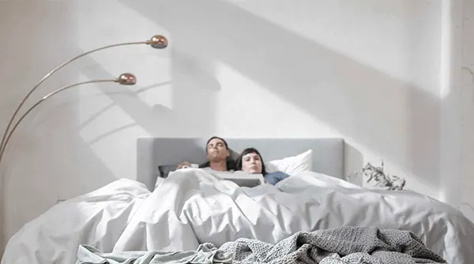

¿Por qué roncamos cada noche?

Los ronquidos son, como ya sabes, unos desagradables sonidos, desafortunadamente, frecuentes, ruidosos y molestos que producen mientras dormimos.
Algunos datos sobre roncar
Alrededor de la mitad de la población mundial ronca en algún momento de su vidas, sin distinción de sexos. Y es que, aunque el ronquido es más común en los hombres, si eres mujer puedes haberte sorprendido cuando después de dormir acompañada, te han dicho que has pasado la noche roncando: alrededor del 40 % de hombres y un 24% de mujeres son roncadores habituales.
La postura en la que dormimos hace que tengamos más probabilidad de roncar, así dormir boca arriba hace que ronques o usar una almohada cuya altura no es óptima para ti. El consumo de alcohol u otros depresores, la congestión por un resfriado y las alergias son otros factores que hacen que ronques. Además, parece que éste “comportamiento” se vuelve más común a medida que se envejece.
El roncar puede ser una molestia para nuestra pareja e incluso en ocasiones, los ronquidos traspasan las 4 paredes de nuestro dormitorio y molestan incluso a aquellos con quienes no compartimos cuarto. Ahora bien, el roncador es el último en darse cuenta de sus ronquidos y por lo general, son sus compañeros de noches quienes terminan por informarles de la nada agradable circunstancia. ¿Y si duermo solo? ¿Cómo saber si ronco? Una pista: si te despiertas con la boca seca o la garganta dolorido, puede que hayas pasado la noche roncando.
La intensidad del ruido también influye en la atención que le prestamos a nuestros ronquidos. Así, los ronquidos ligeros por lo general, no suelen interrumpir el sueño o empeorar la calidad del mismo. Ronquidos más severos pueden estar asociado con la apnea obstructiva del sueño, lo que significa que padecemos un trastorno del sueño.
Ronquido versus apnea del sueño
Según el doctor Alejandro Guillén Riquelme, hay evidencias que prueban que existen los roncadores sin apnea.
El responsable del Laboratorio del Sueño de la Universidad de Granada nos da unas pautas para conocer si existe apnea concomitante con el roncar: “Cuando se observa ronquido primario este no suele estar acompañado por el resto de síntomas de la apnea, como despertar cansado, somnolencia diurna, despertar varias veces por la noche, microdespertares, etc.” Además, Guillén-Riquelme asegura que: ” sería habitual la sensación, en el momento de despertar, de tener la boca y las vías respiratorio secas o irritadas. No obstante, en aquellas personas que roncan, los síntomas propios de la apnea, se pueden dan con mayor probabilidad que en personas sin ronquido. Por ello, a nivel clínico, si la persona roncadora no presenta otro tipo de alteraciones del sueño o el descanso, no se considera necesario realizar ningún tipo de intervención.”
¿Qué provoca este tipo de ronquidos sin apnea?
La respuesta, también nos la da el Dr. Guillén-Riquelme, “este trastorno puede estar provocado por diversas causas. Así se pueden encontrar factores anatómicos del aparato respiratorio que sean los que producen el problema. De la misma forma que exista algún tipo de debilidad muscular en la faringe y la lengua puede provocarlo. El sobrepeso y la acumulación de grasa en el pecho y la garganta pueden hacer que la musculatura sea incapaz de soportar el peso, comprimiendo así las vías aéreas, lo que, a su vez, provocará el ronquido al pasar el aire por la vía estrechada. Según la causa que esté provocando el trastorno, los ronquidos no se dan con la misma frecuencia en todas las fases del sueño. Esto se debe, entre otras causas, a que en las diferentes fases del sueño la atonía muscular es diferente, por lo que la resistencia de los músculos al peso de la grasa será mayor en unas fases que en otras.”
“Siguiendo en la línea de la causa del ronquido por peso, hay diversos estudios en los que se concluye que, cuando los sujetos roncan debido a sobrepeso, este problema deriva, con mayor frecuencia en apnea completa.”
“Por último, cabe destacar que es frecuente que se produzcan ronquidos en niños. Esto se debe principalmente al desarrollo muscular no completo o por vegetaciones adenoideas demasiado desarrolladas que impide el paso de aire produciendo el ronquido. De hecho, la prevalencia en niños baja sensiblemente a partir de lo 9-10 años por un desarrollo mayor de la musculatura y los tamaños de la vías.”
En definitiva, el ronquido puede ser un síntoma de la apnea obstructiva del sueño, pero no todo el que ronca tiene éste desorden. La apnea obstructiva del sueño es un trastorno grave que causa que dejemos de respirar momentáneamente cuando dormimos. Si sueles estar cansado durante el día, aunque hayas dormido lo suficiente, si tu ronquido va acompañado de asfixia o jadeo, puedes estar sufriendo apnea del sueño. Solo un especialista del sueño puede diagnosticar la apnea a través de un estudio del sueño en una situación de laboratorio y pruebas sobre la conducta de sueño en casa.
¿Cómo sé si ronco?
El síntoma primario de los ronquidos es evidente: los ruidos frecuentemente fuertes, ásperos o roncos que haces mientras duermes. Otros síntomas pueden incluir despertarse con dolor de garganta o boca seca.
Por otro lado, los síntomas que abarca la apnea del sueño son:
– Somnolencia diurna excesiva
– Asfixia o jadeo mientras duerme
– Pausa en la respiración
– Dolores de cabeza por la mañana
– Dificultad para concentrarse
– Mal humor, irritabilidad o depresión
– Necesidad frecuente de orinar durante la noche
Estudio del sueño nocturno en un laboratorio
Este tipo de estudio del sueño requiere que permanezcamos durante una noche en un centro del sueño, en una cama y una estancia similar a una habitación de hotel. Se dormiría con sensores conectados a varias partes de su cuerpo que registrarían las ondas cerebrales, frecuencia cardíaca, la respiración… entre otros parámetros. Se suele recomendar esta prueba para casos más complicados o difíciles de diagnosticar. Un estudio de sueño en laboratorio proporciona la evaluación más completa del sueño.
Prueba de apnea del sueño en el hogar
Este tipo de estudio de sueño nos permite dormir con la comodidad de estar en nuestra propia casa mientras una máquina recopila información. El equipo de prueba difiere con el que se utiliza en la prueba de laboratorio ya que es menos complicado.
Tratamiento para los ronquidos
Una vez que el especialista certifique o descarte que tenemos apnea del sueño, el abordaje terapéutico seguirá una senda u otra. Si no sufrimos ésta parasomnia, los tratamientos podrían ser los siguientes:
Pérdida de peso: perder peso puede ayudar a reducir o eliminar los ronquidos en algunas personas, así que si roncas y sufres sobrepeso, quitarte esos kilos de más, debe ser una prioridad. El aumento de peso puede empeorar los ronquido, e incluso puede conducir a la apnea del sueño.
Terapia posicional: para algunas personas, los ronquidos ocurren principalmente mientras duermen boca arriba. Si eres uno de estos tipos de roncadores, puedes mejorar tu ronquido cambiando de postura durante el sueño.
Evitar el alcohol, relajantes musculares y ciertos medicamentos: estos pueden relajar los músculos de la garganta o la lengua, causando que ronquemos como señalamos anteriormente, evitando el uso de estas sustancias, es posible reducir o eliminar la aparición de los ronquidos.
Aparatos orales: un dispositivo oral es un pequeño dispositivo de plástico que se adapta a la boca sobre los dientes mientras duerme, lo que le impide roncar. El dispositivo impide que las vías respiratorias se colapsen sujetando la lengua o deslizando la mandíbula hacia adelante para que pueda respirar cuando esté dormido.
Si finalmente se nos diagnostica apnea del sueño como la causa de nuestros ronquidos, el abordaje terapéutico puede llegar a ser más complicado.